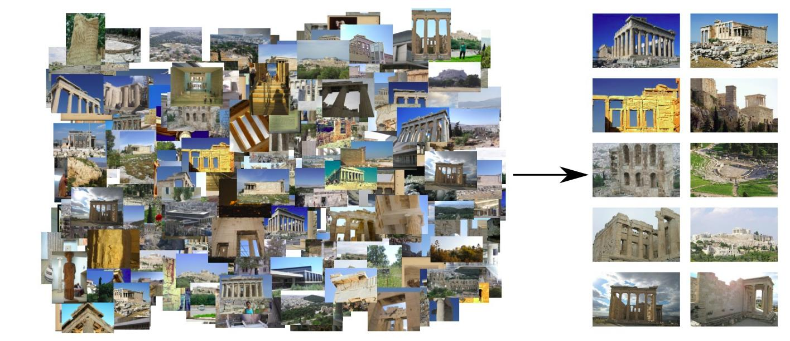
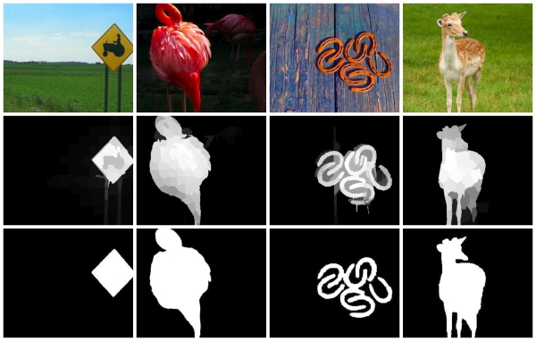
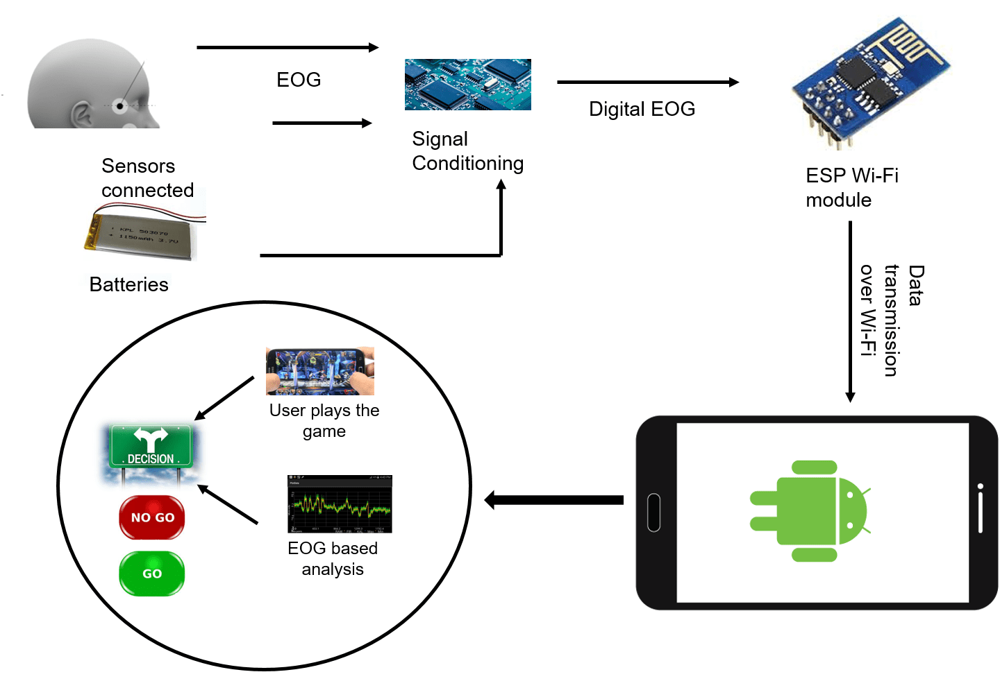
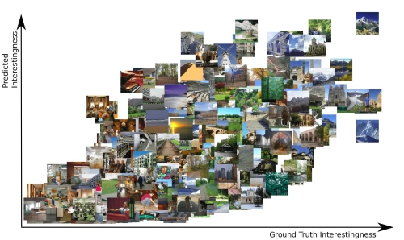
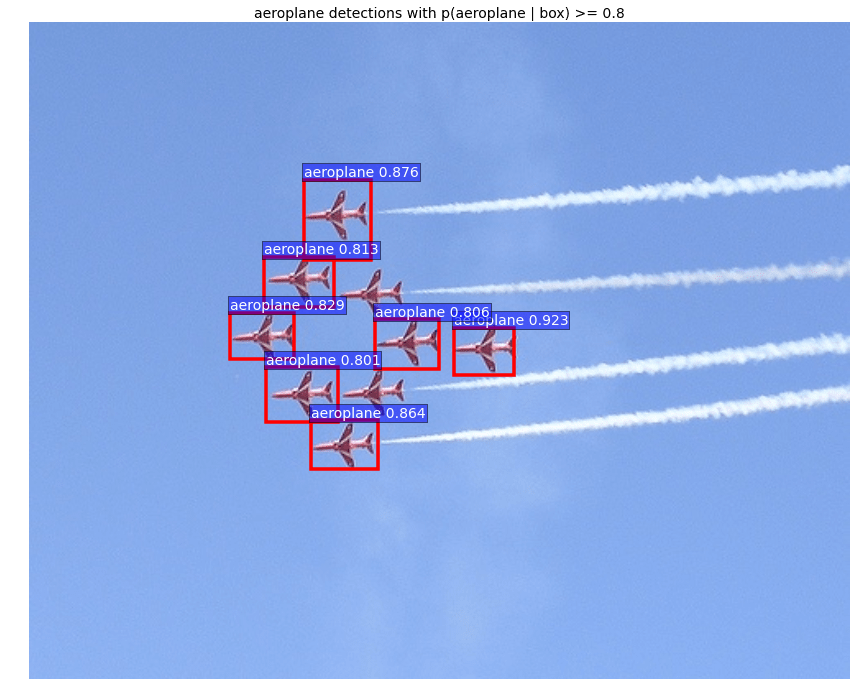
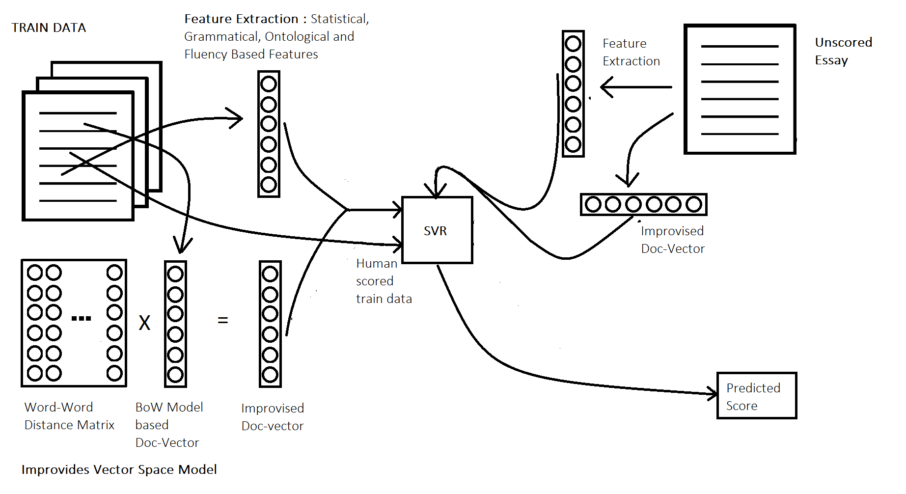

Email | CV | Google Scholar | Github
I am a Computer Science Fellow at Harvard university, where I am a part of the Visual Computing Group. I’m currently working with Prof. Hanspeter Pfister on Computer Vision and Deep Learning for Connectomics: a large-scale effort to create the wiring diagram of the mammalian brain at nanoscale resolution.
Before coming to Harvard, I spent a year at the Machine Learning and Optimization group, Microsoft Research, India as a Research Fellow working with Dr. Prateek Jain on large-scale multi-label learning. I completed my undergraduate studies at Indian Institute of Technology, Kharagpur. I did my undergraduate internships at Computer Vision Lab, ETH Zurich under the supervision of Prof. Luc Van Gool and at the Video Analytics Lab at CDS, IISc Bangalore with Prof. R. Venkatesh Babu.
|  |
Learning Objective Functions for Improved Image Retrieval We formulate improving image retrieval as a subset selection problem and address it using submodularity. We published our work MediaEval Workshop, 2015 |
|  |
Salient Object Detection via Objectness Measure We propose a pipeline to use Object Proposals to obtain smooth and accurate saliency maps. We published our results at IEEE International Conference on Image Processing (ICIP), 2015 |
|  |
A Smart Wearable System for Classification of Alertness States We developed a prototype for a wearable system that predicts the state of alertness of an individual taking up a safety critical task. Our work was covered by major Indian press. We have also submitted our work to IEEE Transactions on Mobile Computing. In the Press:Hindustan Times, 2016: IIT Kharagpur innovation to monitor fatigue level in pilots. Times of India, 2016: Stressed? Now, wear a pair of glasses and find out how much. |
|  |
Visual Interestingness of Images We analyze how image content and emotions are linked to interest in order to get new insights on what makes an image interesting. We build a predictive model using deep convolutional networks, which predicts interest more accurately that the previous state-of-the-art. |
|  |
Selective Search for Object Detection Selective Search is an object proposal algorithm which combines the strength of both exhaustive search and segmentation. We provide a python implementation of selective search. We also integrate it with fast-rcnn, which uses the proposals generated by selective search for object recognition. |
|  |
We propose a regression based approach to automatically score essays. We achieve results that are comparable to professional human raters while at a much faster rate. |